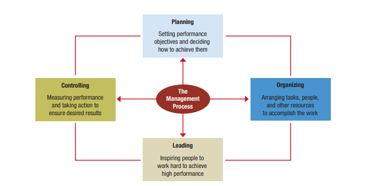

Click and Reveal
Functions of Management
Select to learn more.
The process of management involves planning, organizing, leading, and controlling the use of resources to accomplish performance goals. These four management functions and their interrelationships are crucial for achieving organizational success. They are not accomplished in a linear, step-by-step fashion but are continually engaged as a manager works through tasks and opportunities.
Select each item to learn more.
In management, planning is the process of setting performance objectives and determining actions to accomplish them.
Organizing is the process of assigning tasks, allocating resources, and coordinating activities to implement plans.
Leading involves arousing people's enthusiasm to work hard and inspiring their efforts to fulfill plans and accomplish objectives.
Controlling is the process of measuring work performance, comparing results with objectives, and taking corrective action as needed.

Carousel
Select each tab to learn more.
A manager fulfills various roles, including:
- Monitor: Scanning for information.
- Disseminator: Sharing information.
- Spokesperson: Acting as an official communicator.
- Figurehead: Modeling key principles and policies.
- Leader: Providing direction and instilling enthusiasm.
- Liaison: Coordinating with others.
- Disturbance-handler: Dealing with problems and conflicts.
- Resource Allocator: Handling budgets and resources.
- Negotiator: Making deals and forging agreements.
- Entrepreneur: Developing new initiatives.
Managers must not only understand their roles but also implement them in a demanding work setting. Their workdays are hectic, and they work with various communication media. Managerial work is busy, challenging, and rewarding.